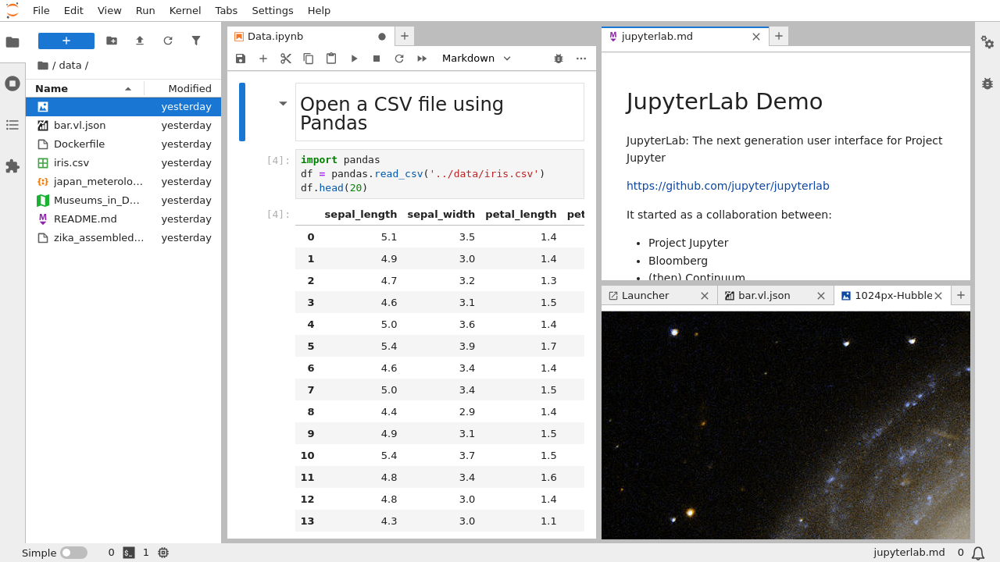
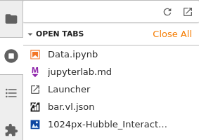
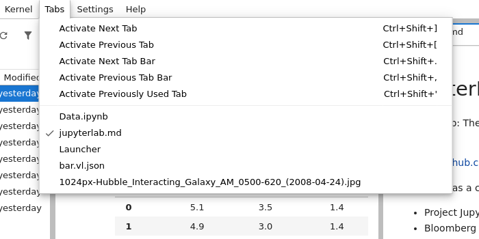

The JupyterLab Interface#
JupyterLab provides flexible building blocks for interactive, exploratory computing. While JupyterLab has many features found in traditional integrated development environments (IDEs), it remains focused on interactive, exploratory computing.
The JupyterLab interface consists of a main work area containing tabs of documents and activities, a collapsible left sidebar, and a menu bar. The left sidebar contains a file browser, the list of running kernels and terminals, the command palette, the notebook cell tools inspector, and the tabs list.
JupyterLab sessions always reside in a workspace. Workspaces contain the state of JupyterLab: the files that are currently open, the layout of the application areas and tabs, etc. Workspaces can be saved on the server with named workspace URLs or using workspace commands available in the menu and sidebar. To learn more about URLs in Jupyterlab, visit JupyterLab URLs.
Main Work Area#
The main work area in JupyterLab enables you to arrange documents (notebooks, text files, etc.) and other activities (terminals, code consoles, etc.) into panels of tabs that can be resized or subdivided. Drag a tab to the center of a tab panel to move the tab to the panel. Subdivide a tab panel by dragging a tab to the left, right, top, or bottom of the panel:
The work area has a single current activity. The tab for the current activity is marked with a colored top border (blue by default).
Tabs and Simple Interface Mode#
The Tabs panel in the left sidebar lists the open documents or activities in the main work area:
The same information is also available in the Tabs menu:
It is often useful to focus on a single document or activity without closing other tabs in the main work area. Simple Interface mode enables this, while making it easy to return to your multi-activity layout in the main work area. Toggle Simple Interface mode using the View menu:
When you leave Simple Interface mode, the original layout of the main area is restored.
Searching#
JupyterLab has an advanced built-in search plugin for finding text within a
notebook or other document, which uses the Ctrl+F (Cmd+F for macOS) shortcut by default.
Your browser’s find function will give unexpected results because it doesn’t have
access to the full content of a document (by default), but you can still use your browser find
function from the browser menu if you want, or you can disable the built-in search
shortcut using the Advanced Settings Editor.
Alternatively, you can disable windowed notebook rendering to expose the full document content to the browser at the expense of performance.
Keyboard Shortcuts#
As in the classic Notebook, you can navigate the user interface through keyboard shortcuts. You can find and customize the current list of keyboard shortcuts by selecting the Advanced Settings Editor item in the Settings menu, then selecting Keyboard Shortcuts in the Settings tab.
To define a custom keyboard shortcut which runs more than one command, add a keyboard shortcut
for apputils:run-all-enabled command in Keyboard Shortcuts advanced settings. The commands you
wish to run are passed in the args argument as a list of strings:
{
"shortcuts": [
{
"command": "apputils:run-all-enabled",
"keys": [
"Accel T"
],
"args": {
"commands": [
"docmanager:save",
"application:close"
]
},
"selector": "body"
}
]
}
In this example docmanager:save and application:close commands are mapped to Accel T.
The commands are run in succession when you use the shortcut.
You can also customize the text editor to use vim, emacs, or Sublime Text keyboard maps by using the Text Editor Key Map submenu in the Settings menu: